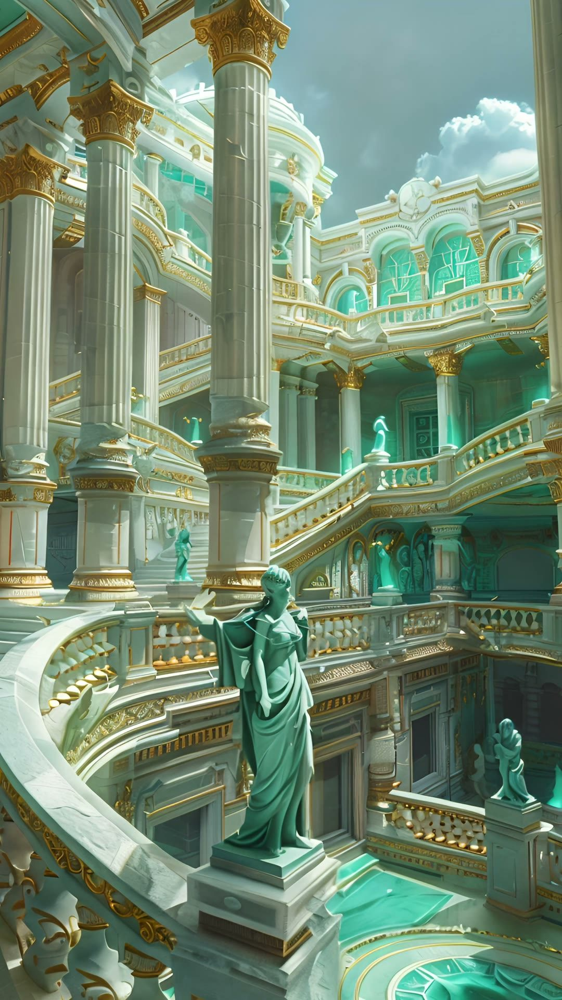
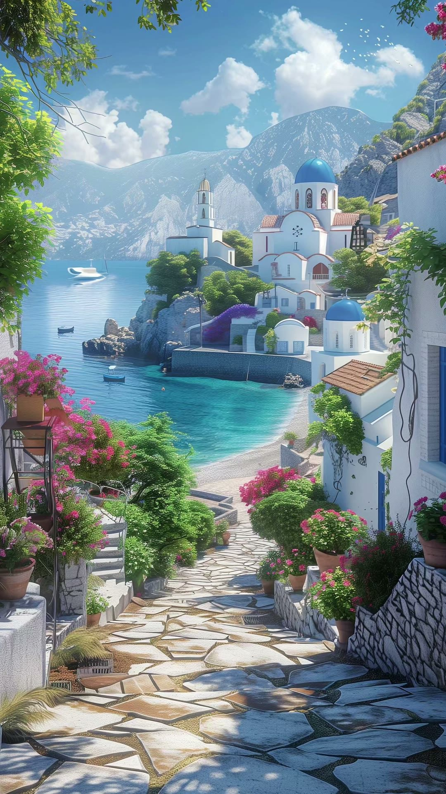
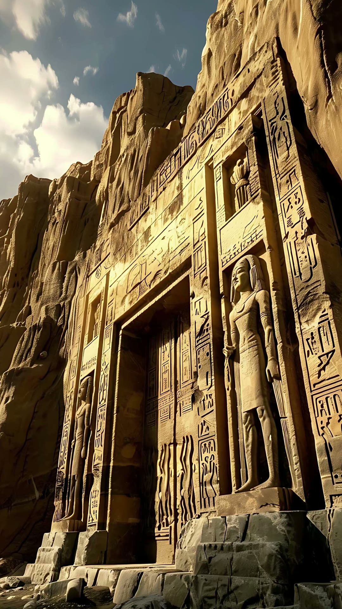
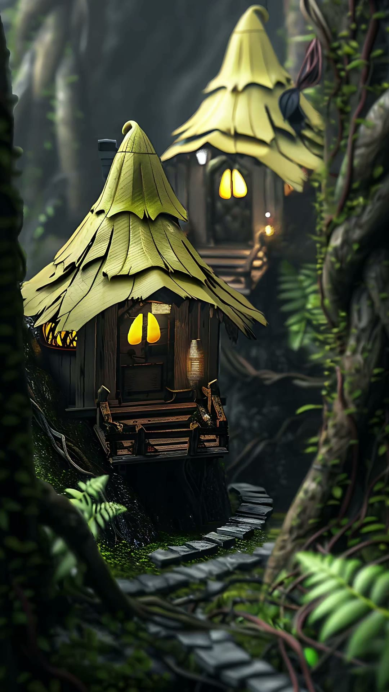
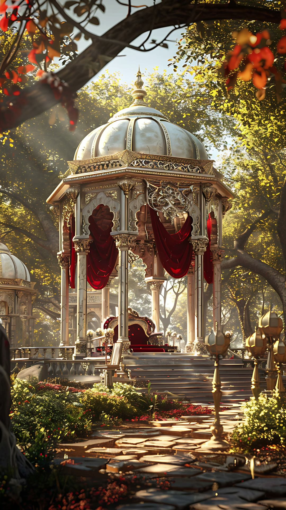
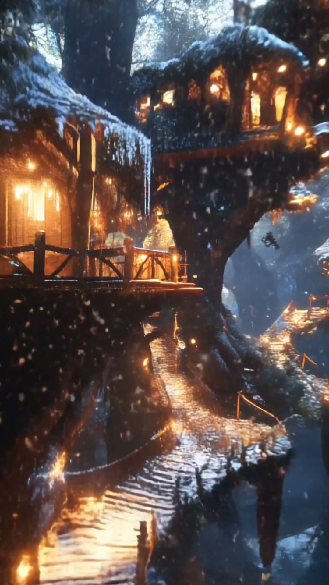

인스타그램 팬 영상 시리즈 · 2024
메이플 실사 시리즈
장소 하나를 영상 한 편으로
게임 속 장소 하나를 골라 영상 한 편으로 만들었습니다. Midjourney로 그 장소의 그림을 여러 장 뽑아 Upscayl로 키우고, LeiaPix로 깊이감 있는 카메라 움직임을, Runway Gen-2 모션 브러시로 물 흐름처럼 화면 일부만 움직이는 컷을 만들어 이어 붙였습니다.






날짜로 본 흐름
| 날짜 | 일 |
|---|---|
| 2024-01 | 생성 이미지로 첫 작업 |
| 2024-03-05 | 시리즈 첫 작업 파일 |
| 2024-03-20 | 첫 완성본 「시간의 신전」 |
| 2024-05-20 | 팔로워 3만 — 이날까지 완성본 20편 |
| 그 뒤 | 최고 3.5만 |
| 2024-09 | 「엘리니아 사계절」까지 완성본 30편 |
| 2025-07 | 넥슨 메이플스토리N 쇼케이스 영상 — 이 시리즈를 보고 들어온 의뢰 |